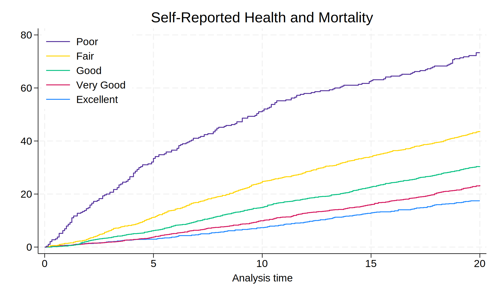
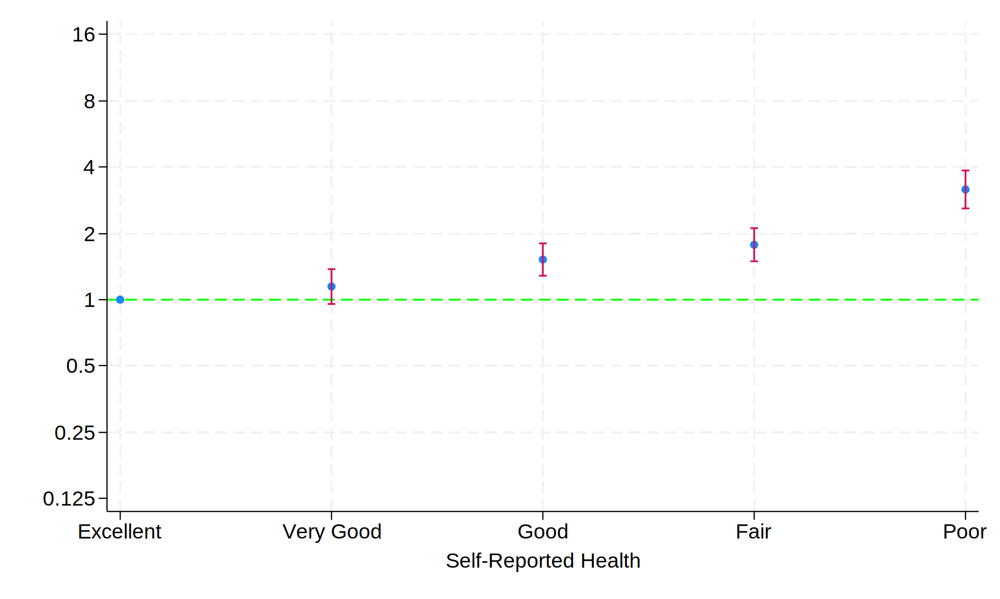
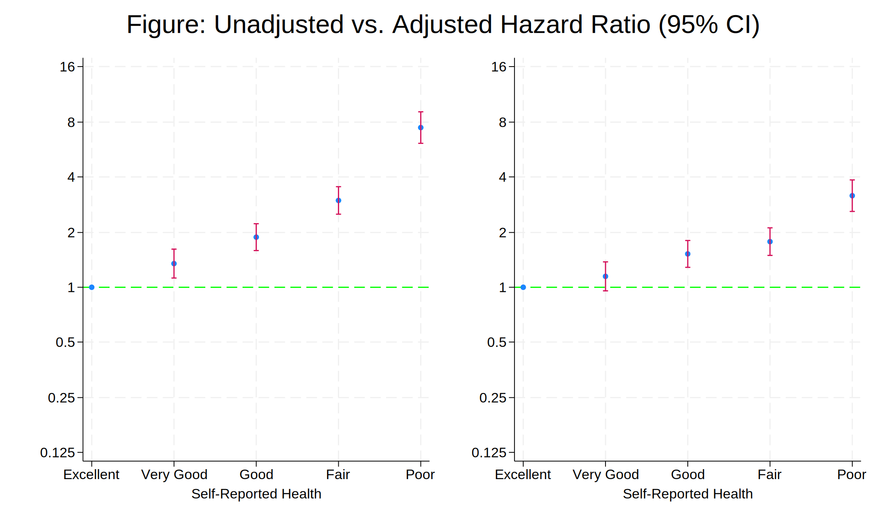

. cls
.
. global repo "https://github.com/chhhhhhhhh1234/project/raw/main/"
. global nhanes "https://wwwn.cdc.gov/Nchs/Nhanes/"
.
.
. do ${repo}followup.do
note: https://github.com/chhhhhhhhh1234/project/raw/main/followup.do redirected to
https://raw.githubusercontent.com/chhhhhhhhh1234/project/main/followup.do
. /*******************************************************************************
> * May 2022
>
> ** PUBLIC-USE LINKED MORTALITY FOLLOW-UP THROUGH DECEMBER 31, 2019 **
>
> * The following Stata code can be used to read the fixed-width format ASCII
> * public-use Linked Mortality Files (LMFs) from a stored location into a
> * Stata dataset. Basic frequencies are also produced.
>
>
> NOTE: The format definitions given below will result in procedure output
> showing values that have been grouped as they are shown in the file layout
> documentation.
>
>
> To download and save the public-use LMFs to your hard drive, follow these steps:
>
> *Step 1: Designate a folder on your hard drive to download the public-use LMF.
> In this example, the data will be saved to: 'C:\PUBLIC USE DATA'
>
> *Step 2: To download the public-use LMF, go to the web site:
> https://ftp.cdc.gov/pub/health_statistics/nchs/datalinkage/linked_mortality/.
>
> Right click on the desired survey link and select "Save target as...".
> A "Save As" screen will appear where you will need to select and input
> a location where to save the data file on your hard drive.
>
> Also note that the "Save as type:" box should read "DAT File (*.dat)".
> This will ensure that the data file is saved to your hard drive in the
> correct format.
>
> In this example, the data file is saved in the folder, "C:\PUBLIC USE DATA",
> and the data file is saved as "<SURVEY>_MORT_2019_PUBLIC.DAT".
> */
.
. di "What is your working directory?" _request(workdir)
What is your working directory?. \\win.ad.jhu.edu\Users$\HOME\WINDOWS\uvdi\Desktop\stata\interme
> diate\hw6
. cd "$workdir"
\\win.ad.jhu.edu\Users$\HOME\WINDOWS\uvdi\Desktop\stata\intermediate\hw6
. //cd "C:\PUBLIC USE DATA" // SET DIRECTORY WHERE DATA ARE LOCATED, E.G. "C:\PUBLIC USE DATA
> "
. global SURVEY NHANES_1999_2000 // REPLACE <SURVEY> WITH RELEVANT SURVEY NAME (IN ALL CAPS)
. * example syntax:
. * global SURVEY NHIS_2018
. * or
. * global SURVEY NHANES_2017_2018
.
. clear all
.
. **************
. *NHIS VERSION*
. **************
.
. // DEFINE VALUE LABELS FOR REPORTS
. label define eligfmt 1 "Eligible" 2 "Under age 18, not available for public release" 3 "Inelig
> ible"
. label define mortfmt 0 "Assumed alive" 1 "Assumed deceased" .z "Ineligible or under age 18"
. label define flagfmt 0 "No - Condition not listed as a multiple cause of death" 1 "Yes - Condi
> tion listed as a multiple cause of death" .z "Assumed alive, under age 18, ineligible for mort
> ality follow-up, or MCOD not available"
. label define qtrfmt 1 "January-March" 2 "April-June" 3 "July-September" 4 "October-December" .
> z "Ineligible, under age 18, or assumed alive"
. label define dodyfmt .z "Ineligible, under age 18, or assumed alive"
. label define ucodfmt 1 "Diseases of heart (I00-I09, I11, I13, I20-I51)"
>
. label define ucodfmt 2 "Malignant neoplasms (C00-C97)"
> , add
. label define ucodfmt 3 "Chronic lower respiratory diseases (J40-J47)"
> , add
. label define ucodfmt 4 "Accidents (unintentional injuries) (V01-X59, Y85-Y86)"
> , add
. label define ucodfmt 5 "Cerebrovascular diseases (I60-I69)"
> , add
. label define ucodfmt 6 "Alzheimer's disease (G30)"
> , add
. label define ucodfmt 7 "Diabetes mellitus (E10-E14)"
> , add
. label define ucodfmt 8 "Influenza and pneumonia (J09-J18)"
> , add
. label define ucodfmt 9 "Nephritis, nephrotic syndrome and nephrosis (N00-N07, N17-N19, N25-N27
> )" , add
. label define ucodfmt 10 "All other causes (residual)"
> , add
. label define ucodfmt .z "Ineligible, under age 18, assumed alive, or no cause of death data"
> , add
.
. // READ IN THE FIXED-WIDTH FORMAT ASCII PUBLIC-USE LMF
. infix str publicid 1-14 eligstat 15 mortstat 16 ucod_leading 17-19 diabetes 20 hyperten 21 dod
> qtr 22 dodyear 23-26 wgt_new 27-34 sa_wgt_new 35-42 using ${SURVEY}_MORT_2019_PUBLIC.dat
(9,965 observations read)
.
.
. // REPLACE MISSING VALUES TO .z FOR LABELING
. replace mortstat = .z if mortstat >=.
(4,520 real changes made, 4,520 to missing)
. replace ucod_leading = .z if ucod_leading >=.
(8,291 real changes made, 8,291 to missing)
. replace diabetes = .z if diabetes >=.
(8,291 real changes made, 8,291 to missing)
. replace hyperten = .z if hyperten >=.
(8,291 real changes made, 8,291 to missing)
. replace dodqtr = .z if dodqtr >=.
(9,965 real changes made, 9,965 to missing)
. replace dodyear = .z if dodyear >=.
(9,965 real changes made, 9,965 to missing)
.
.
. // DEFINE VARIABLE LABELS
. label var publicid "NHIS Public-ID Number"
. label var eligstat "Eligibility Status for Mortality Follow-up"
. label var mortstat "Final Mortality Status"
. label var ucod_leading "Underlying Cause of Death: Recode"
. label var diabetes "Diabetes flag from Multiple Cause of Death"
. label var hyperten "Hypertension flag from Multiple Cause of Death"
. label var dodqtr "Quarter of Death"
. label var dodyear "Year of Death"
. label var wgt_new "Weight Adjusted for Ineligible Respondents: Person-level Sample Weight"
. label var sa_wgt_new "Weight Adjusted for Ineligible Respondents: Sample Adult Sample Weight"
.
.
. // ASSOCIATE VARIABLES WITH FORMAT VALUES
. label values eligstat eligfmt
. label values mortstat mortfmt
. label values ucod_leading ucodfmt
. label values dodqtr qtrfmt
. label values diabetes flagfmt
. label values hyperten flagfmt
. label values dodyear dodyfmt
.
.
. // DISPLAY OVERALL DESCRIPTION OF FILE
. describe
Contains data
Observations: 9,965
Variables: 10
------------------------------------------------------------------------------------------------
Variable Storage Display Value
name type format label Variable label
------------------------------------------------------------------------------------------------
publicid str14 %14s NHIS Public-ID Number
eligstat byte %46.0g eligfmt Eligibility Status for Mortality Follow-up
mortstat byte %26.0g mortfmt Final Mortality Status
ucod_leading float %71.0g ucodfmt Underlying Cause of Death: Recode
diabetes byte %86.0g flagfmt Diabetes flag from Multiple Cause of Death
hyperten byte %86.0g flagfmt Hypertension flag from Multiple Cause of Death
dodqtr byte %42.0g qtrfmt Quarter of Death
dodyear float %42.0g dodyfmt Year of Death
wgt_new float %9.0g Weight Adjusted for Ineligible Respondents:
Person-level Sample Weight
sa_wgt_new float %9.0g Weight Adjusted for Ineligible Respondents: Sample
Adult Sample Weight
------------------------------------------------------------------------------------------------
Sorted by:
Note: Dataset has changed since last saved.
.
.
. // ONE-WAY FREQUENCIES (UNWEIGHTED)
. tab1 eligstat mortstat ucod_leading diabetes hyperten dodqtr dodyear, missing
-> tabulation of eligstat
Eligibility Status for Mortality |
Follow-up | Freq. Percent Cum.
----------------------------------------+-----------------------------------
Eligible | 5,445 54.64 54.64
Under age 18, not available for public | 4,517 45.33 99.97
Ineligible | 3 0.03 100.00
----------------------------------------+-----------------------------------
Total | 9,965 100.00
-> tabulation of mortstat
Final Mortality Status | Freq. Percent Cum.
---------------------------+-----------------------------------
Assumed alive | 3,770 37.83 37.83
Assumed deceased | 1,675 16.81 54.64
Ineligible or under age 18 | 4,520 45.36 100.00
---------------------------+-----------------------------------
Total | 9,965 100.00
-> tabulation of ucod_leading
Underlying Cause of Death: Recode | Freq. Percent Cum.
----------------------------------------+-----------------------------------
Diseases of heart (I00-I09, I11, I13, I | 468 4.70 4.70
Malignant neoplasms (C00-C97) | 348 3.49 8.19
Chronic lower respiratory diseases (J40 | 94 0.94 9.13
Accidents (unintentional injuries) (V01 | 59 0.59 9.72
Cerebrovascular diseases (I60-I69) | 95 0.95 10.68
Alzheimer's disease (G30) | 56 0.56 11.24
Diabetes mellitus (E10-E14) | 74 0.74 11.98
Influenza and pneumonia (J09-J18) | 45 0.45 12.43
Nephritis, nephrotic syndrome and nephr | 36 0.36 12.79
All other causes (residual) | 399 4.00 16.80
Ineligible, under age 18, assumed alive | 8,291 83.20 100.00
----------------------------------------+-----------------------------------
Total | 9,965 100.00
-> tabulation of diabetes
Diabetes flag from Multiple Cause of |
Death | Freq. Percent Cum.
----------------------------------------+-----------------------------------
No - Condition not listed as a multiple | 1,451 14.56 14.56
Yes - Condition listed as a multiple ca | 223 2.24 16.80
Assumed alive, under age 18, ineligible | 8,291 83.20 100.00
----------------------------------------+-----------------------------------
Total | 9,965 100.00
-> tabulation of hyperten
Hypertension flag from Multiple Cause |
of Death | Freq. Percent Cum.
----------------------------------------+-----------------------------------
No - Condition not listed as a multiple | 1,395 14.00 14.00
Yes - Condition listed as a multiple ca | 279 2.80 16.80
Assumed alive, under age 18, ineligible | 8,291 83.20 100.00
----------------------------------------+-----------------------------------
Total | 9,965 100.00
-> tabulation of dodqtr
Quarter of Death | Freq. Percent Cum.
----------------------------------------+-----------------------------------
Ineligible, under age 18, or assumed al | 9,965 100.00 100.00
----------------------------------------+-----------------------------------
Total | 9,965 100.00
-> tabulation of dodyear
Year of Death | Freq. Percent Cum.
----------------------------------------+-----------------------------------
Ineligible, under age 18, or assumed al | 9,965 100.00 100.00
----------------------------------------+-----------------------------------
Total | 9,965 100.00
.
.
. // SAVE DATA FILE IN DIRECTORY DESIGNATED AT TOP OF PROGRAM AS **SURVEY**_PUF.DTA
. // replace option allows Stata to overwrite an existing .dta file
. save ${SURVEY}_PUF , replace
file NHANES_1999_2000_PUF.dta saved
.
.
. ******************
.
.
. ****************
. *NHANES VERSION*
. ****************
. clear all
.
. // DEFINE VALUE LABELS FOR REPORTS
. label define premiss .z "Missing"
. label define eligfmt 1 "Eligible" 2 "Under age 18, not available for public release" 3 "Inelig
> ible"
. label define mortfmt 0 "Assumed alive" 1 "Assumed deceased" .z "Ineligible or under age 18"
. label define flagfmt 0 "No - Condition not listed as a multiple cause of death" 1 "Yes - Condi
> tion listed as a multiple cause of death" .z "Assumed alive, under age 18, ineligible for mort
> ality follow-up, or MCOD not available"
. label define qtrfmt 1 "January-March" 2 "April-June" 3 "July-September" 4 "October-December" .
> z "Ineligible, under age 18, or assumed alive"
. label define dodyfmt .z "Ineligible, under age 18, or assumed alive"
. label define ucodfmt 1 "Diseases of heart (I00-I09, I11, I13, I20-I51)"
>
. label define ucodfmt 2 "Malignant neoplasms (C00-C97)"
> , add
. label define ucodfmt 3 "Chronic lower respiratory diseases (J40-J47)"
> , add
. label define ucodfmt 4 "Accidents (unintentional injuries) (V01-X59, Y85-Y86)"
> , add
. label define ucodfmt 5 "Cerebrovascular diseases (I60-I69)"
> , add
. label define ucodfmt 6 "Alzheimer's disease (G30)"
> , add
. label define ucodfmt 7 "Diabetes mellitus (E10-E14)"
> , add
. label define ucodfmt 8 "Influenza and pneumonia (J09-J18)"
> , add
. label define ucodfmt 9 "Nephritis, nephrotic syndrome and nephrosis (N00-N07, N17-N19, N25-N27
> )" , add
. label define ucodfmt 10 "All other causes (residual)"
> , add
. label define ucodfmt .z "Ineligible, under age 18, assumed alive, or no cause of death data"
> , add
.
. // READ IN THE FIXED-WIDTH FORMAT ASCII PUBLIC-USE LMF
. infix seqn 1-6 eligstat 15 mortstat 16 ucod_leading 17-19 diabetes 20 hyperten 21 permth_int 4
> 3-45 permth_exm 46-48 using "https://ftp.cdc.gov/pub/HEALTH_STATISTICS/NCHS/datalinkage/linked
> _mortality/NHANES_1999_2000_MORT_2019_PUBLIC.dat"
(9,965 observations read)
.
.
. // REPLACE MISSING VALUES TO .z FOR LABELING
. replace mortstat = .z if mortstat >=.
(4,520 real changes made, 4,520 to missing)
. replace ucod_leading = .z if ucod_leading >=.
(8,291 real changes made, 8,291 to missing)
. replace diabetes = .z if diabetes >=.
(8,291 real changes made, 8,291 to missing)
. replace hyperten = .z if hyperten >=.
(8,291 real changes made, 8,291 to missing)
. replace permth_int = .z if permth_int >=.
(4,520 real changes made, 4,520 to missing)
. replace permth_exm = .z if permth_exm >=.
(4,992 real changes made, 4,992 to missing)
.
.
. // DEFINE VARIABLE LABELS
. label var seqn "NHANES Respondent Sequence Number"
. label var eligstat "Eligibility Status for Mortality Follow-up"
. label var mortstat "Final Mortality Status"
. label var ucod_leading "Underlying Cause of Death: Recode"
. label var diabetes "Diabetes flag from Multiple Cause of Death"
. label var hyperten "Hypertension flag from Multiple Cause of Death"
. label var permth_int "Person-Months of Follow-up from NHANES Interview date"
. label var permth_exm "Person-Months of Follow-up from NHANES Mobile Examination Center (MEC) D
> ate"
.
.
. // ASSOCIATE VARIABLES WITH FORMAT VALUES
. label values eligstat eligfmt
. label values mortstat mortfmt
. label values ucod_leading ucodfmt
. label values diabetes flagfmt
. label values hyperten flagfmt
. label value permth_int premiss
. label value permth_exm premiss
.
.
. // DISPLAY OVERALL DESCRIPTION OF FILE
. describe
Contains data
Observations: 9,965
Variables: 8
------------------------------------------------------------------------------------------------
Variable Storage Display Value
name type format label Variable label
------------------------------------------------------------------------------------------------
seqn float %9.0g NHANES Respondent Sequence Number
eligstat byte %46.0g eligfmt Eligibility Status for Mortality Follow-up
mortstat byte %26.0g mortfmt Final Mortality Status
ucod_leading float %71.0g ucodfmt Underlying Cause of Death: Recode
diabetes byte %86.0g flagfmt Diabetes flag from Multiple Cause of Death
hyperten byte %86.0g flagfmt Hypertension flag from Multiple Cause of Death
permth_int float %9.0g premiss Person-Months of Follow-up from NHANES Interview
date
permth_exm float %9.0g premiss Person-Months of Follow-up from NHANES Mobile
Examination Center (MEC) Date
------------------------------------------------------------------------------------------------
Sorted by:
Note: Dataset has changed since last saved.
.
.
. // ONE-WAY FREQUENCIES (UNWEIGHTED)
. tab1 eligstat mortstat ucod_leading diabetes hyperten, missing
-> tabulation of eligstat
Eligibility Status for Mortality |
Follow-up | Freq. Percent Cum.
----------------------------------------+-----------------------------------
Eligible | 5,445 54.64 54.64
Under age 18, not available for public | 4,517 45.33 99.97
Ineligible | 3 0.03 100.00
----------------------------------------+-----------------------------------
Total | 9,965 100.00
-> tabulation of mortstat
Final Mortality Status | Freq. Percent Cum.
---------------------------+-----------------------------------
Assumed alive | 3,770 37.83 37.83
Assumed deceased | 1,675 16.81 54.64
Ineligible or under age 18 | 4,520 45.36 100.00
---------------------------+-----------------------------------
Total | 9,965 100.00
-> tabulation of ucod_leading
Underlying Cause of Death: Recode | Freq. Percent Cum.
----------------------------------------+-----------------------------------
Diseases of heart (I00-I09, I11, I13, I | 468 4.70 4.70
Malignant neoplasms (C00-C97) | 348 3.49 8.19
Chronic lower respiratory diseases (J40 | 94 0.94 9.13
Accidents (unintentional injuries) (V01 | 59 0.59 9.72
Cerebrovascular diseases (I60-I69) | 95 0.95 10.68
Alzheimer's disease (G30) | 56 0.56 11.24
Diabetes mellitus (E10-E14) | 74 0.74 11.98
Influenza and pneumonia (J09-J18) | 45 0.45 12.43
Nephritis, nephrotic syndrome and nephr | 36 0.36 12.79
All other causes (residual) | 399 4.00 16.80
Ineligible, under age 18, assumed alive | 8,291 83.20 100.00
----------------------------------------+-----------------------------------
Total | 9,965 100.00
-> tabulation of diabetes
Diabetes flag from Multiple Cause of |
Death | Freq. Percent Cum.
----------------------------------------+-----------------------------------
No - Condition not listed as a multiple | 1,451 14.56 14.56
Yes - Condition listed as a multiple ca | 223 2.24 16.80
Assumed alive, under age 18, ineligible | 8,291 83.20 100.00
----------------------------------------+-----------------------------------
Total | 9,965 100.00
-> tabulation of hyperten
Hypertension flag from Multiple Cause |
of Death | Freq. Percent Cum.
----------------------------------------+-----------------------------------
No - Condition not listed as a multiple | 1,395 14.00 14.00
Yes - Condition listed as a multiple ca | 279 2.80 16.80
Assumed alive, under age 18, ineligible | 8,291 83.20 100.00
----------------------------------------+-----------------------------------
Total | 9,965 100.00
. tab permth_int if permth_int==.z, missing
Person-Mont |
hs of |
Follow-up |
from NHANES |
Interview |
date | Freq. Percent Cum.
------------+-----------------------------------
Missing | 4,520 100.00 100.00
------------+-----------------------------------
Total | 4,520 100.00
. tab permth_exm if permth_exm==.z, missing
Person-Mont |
hs of |
Follow-up |
from NHANES |
Mobile |
Examination |
Center |
(MEC) Date | Freq. Percent Cum.
------------+-----------------------------------
Missing | 4,992 100.00 100.00
------------+-----------------------------------
Total | 4,992 100.00
.
. // SAVE DATA FILE IN DIRECTORY DESIGNATED AT TOP OF PROGRAM AS **SURVEY**_PUF.DTA
. // replace option allows Stata to overwrite an existing .dta file
. save ${SURVEY}_PUF, replace
file NHANES_1999_2000_PUF.dta saved
.
end of do-file
. save followup, replace
(file followup.dta not found)
file followup.dta saved
. import sasxport5 "${nhanes}1999-2000/DEMO.XPT", clear
. merge 1:1 seqn using followup, nogen
Result Number of obs
-----------------------------------------
Not matched 0
Matched 9,965
-----------------------------------------
. save survey_followup, replace
(file survey_followup.dta not found)
file survey_followup.dta saved
.
.
. import sasxport5 "${nhanes}1999-2000/HUQ.XPT", clear
. tab huq010
General |
health |
condition | Freq. Percent Cum.
------------+-----------------------------------
1 | 3,002 30.14 30.14
2 | 2,464 24.74 54.88
3 | 2,867 28.79 83.66
4 | 1,306 13.11 96.78
5 | 316 3.17 99.95
9 | 5 0.05 100.00
------------+-----------------------------------
Total | 9,960 100.00
. merge 1:1 seqn using survey_followup, nogen keep(matched)
Result Number of obs
-----------------------------------------
Not matched 0
Matched 9,965
-----------------------------------------
. rm followup.dta
. rm survey_followup.dta
. g years=permth_int/12
(4,520 missing values generated)
. stset years, fail(mortstat)
Survival-time data settings
Failure event: mortstat!=0 & mortstat<.
Observed time interval: (0, years]
Exit on or before: failure
--------------------------------------------------------------------------
9,965 total observations
4,520 event time missing (years>=.) PROBABLE ERROR
2 observations end on or before enter()
--------------------------------------------------------------------------
5,443 observations remaining, representing
1,673 failures in single-record/single-failure data
91,800.25 total analysis time at risk and under observation
At risk from t = 0
Earliest observed entry t = 0
Last observed exit t = 20.83333
. replace huq010=. if huq010==9
(5 real changes made, 5 to missing)
. label define huq 1 "Excellent" 2 "Very Good" 3 "Good" 4 "Fair" 5 "Poor"
. label values huq010 huq
. levelsof huq010, local(numlevels)
1 2 3 4 5
. local i=1
. foreach l of numlist `numlevels' {
2. local vallab: value label huq010
3. local catlab: lab `vallab' `l'
4. global legend`i' = "`catlab'"
5. local i= `i' + 1
6. }
. save week7, replace
file week7.dta saved
. sts graph, ///
> by(huq010) ///
> fail ///
> per(100) ///
> ylab(0(20)80 , ///
> format(%2.0f) ///
> ) ///
> xlab(0(5)20) ///
> tmax(20) ///
> ti("Self-Reported Health and Mortality") ///
> legend( ///
> order(5 4 3 2 1) ///
> lab(1 "$legend1") ///
> lab(2 "$legend2") ///
> lab(3 "$legend3") ///
> lab(4 "$legend4") ///
> lab(5 "$legend5") ///
> ring(0) pos(11) ///
> )
Failure _d: mortstat
Analysis time _t: years
. graph export nonpara.png, replace
file nonpara.png saved as PNG format

. stcox i.huq010, basesurv(s0)
Failure _d: mortstat
Analysis time _t: years
Iteration 0: Log likelihood = -14053.711
Iteration 1: Log likelihood = -13842.257
Iteration 2: Log likelihood = -13815.469
Iteration 3: Log likelihood = -13815.219
Iteration 4: Log likelihood = -13815.219
Refining estimates:
Iteration 0: Log likelihood = -13815.219
Cox regression with Breslow method for ties
No. of subjects = 5,436 Number of obs = 5,436
No. of failures = 1,671
Time at risk = 91,679.7499
LR chi2(4) = 476.98
Log likelihood = -13815.219 Prob > chi2 = 0.0000
------------------------------------------------------------------------------
_t | Haz. ratio Std. err. z P>|z| [95% conf. interval]
-------------+----------------------------------------------------------------
huq010 |
Very Good | 1.347475 .1251746 3.21 0.001 1.123176 1.616567
Good | 1.880346 .1619641 7.33 0.000 1.588251 2.226159
Fair | 2.985347 .2634849 12.39 0.000 2.511125 3.549126
Poor | 7.475088 .7565146 19.88 0.000 6.130144 9.115111
------------------------------------------------------------------------------
. matrix define mat = r(table)
. matrix list mat
mat[9,5]
1b. 2. 3. 4. 5.
huq010 huq010 huq010 huq010 huq010
b 1 1.3474753 1.8803457 2.9853475 7.4750881
se . .12517462 .16196412 .26348489 .75651458
z . 3.2104048 7.3309743 12.392068 19.876295
pvalue . .00132548 2.285e-13 2.885e-35 6.528e-88
ll . 1.1231762 1.5882512 2.5111252 6.1301437
ul . 1.6165672 2.226159 3.5491258 9.1151112
df . . . . .
crit 1.959964 1.959964 1.959964 1.959964 1.959964
eform 1 1 1 1 1
. matrix mat = mat'
. svmat mat
. preserve
. keep mat*
. drop if missing(mat1)
(9,960 observations deleted)
. rename (mat1 mat2 mat3 mat4 mat5 mat6 mat7 mat8 mat9)(b se z p ll ul df crit eform)
. g x=_n
. replace b=log(b)
(5 real changes made)
. replace ll=log(ll)
(4 real changes made)
. replace ul=log(ul)
(4 real changes made)
. twoway (scatter b x) || ///
> (rcap ll ul x, ///
> yline(0, lcol(lime)) ///
> ylab( ///
> -2.08 "0.125" ///
> -1.39 "0.25" ///
> -.69 "0.5" ///
> 0 "1" ///
> .69 "2" ///
> 1.39 "4" ///
> 2.08 "8" ///
> 2.78 "16") ///
> legend(off) ///
> xlab( ///
> 1 "$legend1" ///
> 2 "$legend2" ///
> 3 "$legend3" ///
> 4 "$legend4" ///
> 5 "$legend5") ///
> xti("Self-Reported Health") ///
> )
. graph export semipara_unadj.png, replace
file semipara_unadj.png saved as PNG format
. graph save semipara_unadj.gph, replace
file semipara_unadj.gph saved
. restore
. hist ridageyr
(bin=39, start=0, width=2.1794872)
. graph export nonpara.png, replace
file nonpara.png saved as PNG format
. capture drop s0
. stcox i.huq010 ridageyr riagendr, basesurv(s0)
Failure _d: mortstat
Analysis time _t: years
Iteration 0: Log likelihood = -14053.711
Iteration 1: Log likelihood = -12507.535
Iteration 2: Log likelihood = -12336.034
Iteration 3: Log likelihood = -12330.399
Iteration 4: Log likelihood = -12330.368
Iteration 5: Log likelihood = -12330.368
Refining estimates:
Iteration 0: Log likelihood = -12330.368
Cox regression with Breslow method for ties
No. of subjects = 5,436 Number of obs = 5,436
No. of failures = 1,671
Time at risk = 91,679.7499
LR chi2(6) = 3446.69
Log likelihood = -12330.368 Prob > chi2 = 0.0000
------------------------------------------------------------------------------
_t | Haz. ratio Std. err. z P>|z| [95% conf. interval]
-------------+----------------------------------------------------------------
huq010 |
Very Good | 1.14715 .1066937 1.48 0.140 .9559872 1.376539
Good | 1.522007 .1313003 4.87 0.000 1.285243 1.802387
Fair | 1.777098 .157479 6.49 0.000 1.493762 2.114177
Poor | 3.169804 .3213622 11.38 0.000 2.598577 3.8666
|
ridageyr | 1.089492 .0020788 44.92 0.000 1.085425 1.093574
riagendr | .7039323 .0347043 -7.12 0.000 .6390961 .7753461
------------------------------------------------------------------------------
. return list
matrices:
r(table) : 9 x 7
. matrix define mat_adj=r(table)
. matrix define mat_adj=mat_adj'
. matrix list mat_adj
mat_adj[7,9]
b se z pvalue ll ul df
1b.huq010 1 . . . . . .
2.huq010 1.1471502 .10669366 1.4760168 .13993937 .9559872 1.3765388 .
3.huq010 1.5220069 .13130029 4.868902 1.122e-06 1.2852431 1.8023867 .
4.huq010 1.7770978 .15747898 6.4884757 8.671e-11 1.493762 2.1141766 .
5.huq010 3.1698039 .32136218 11.379393 5.297e-30 2.5985769 3.8665996 .
ridageyr 1.0894921 .00207879 44.921463 0 1.0854254 1.0935741 .
riagendr .70393228 .03470427 -7.1210742 1.071e-12 .63909607 .77534611 .
crit eform
1b.huq010 1.959964 1
2.huq010 1.959964 1
3.huq010 1.959964 1
4.huq010 1.959964 1
5.huq010 1.959964 1
ridageyr 1.959964 1
riagendr 1.959964 1
. svmat mat_adj
. keep mat_adj*
. drop if missing(mat_adj1)
(9,958 observations deleted)
. rename (mat_adj1 mat_adj2 mat_adj3 mat_adj4 mat_adj5 mat_adj6 mat_adj7 mat_adj8 mat_adj9)(b se
> z p ll ul df crit eform)
. g x=_n
. replace b=log(b)
(7 real changes made)
. replace ll=log(ll)
(6 real changes made)
. replace ul=log(ul)
(6 real changes made)
. twoway (scatter b x if inrange(x,1,5)) || ///
> (rcap ll ul x if inrange(x,1,5), ///
> yline(0, lcol(lime)) ///
> ylab( ///
> -2.08 "0.125" ///
> -1.39 "0.25" ///
> -.69 "0.5" ///
> 0 "1" ///
> .69 "2" ///
> 1.39 "4" ///
> 2.08 "8" ///
> 2.78 "16") ///
> legend(off) ///
> xlab( ///
> 1 "$legend1" ///
> 2 "$legend2" ///
> 3 "$legend3" ///
> 4 "$legend4" ///
> 5 "$legend5") ///
> xti("Self-Reported Health") ///
> )
. graph export semipara_adj.png, replace
file semipara_adj.png saved as PNG format
. graph save semipara_adj.gph, replace
file semipara_adj.gph saved

. graph combine semipara_unadj.gph semipara_adj.gph, rows(1) xcommon ti("Figure: Unadjusted vs.
> Adjusted Hazard Ratio (95% CI)")
.
. graph export comparison.png, replace
file comparison.png saved as PNG format
. graph save comparison.gph, replace
file comparison.gph saved
.
